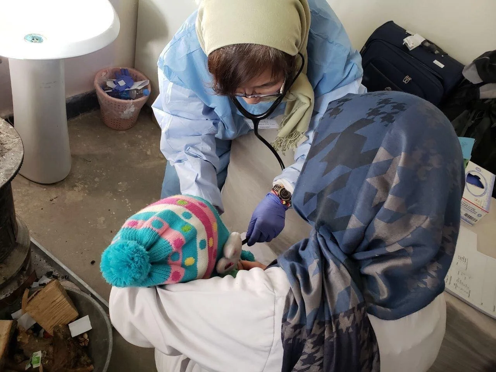

What is Mission and Medical (MnM)?
North America Mission and Medical (MnM) ministry began in March 2015 when the refugee crisis became one of the most unsettling issues in the Middle East. At our medical clinics in the mission field, we started serving refugees who had been traumatized physically, mentally, or spiritually. Through medical ministry, we have shared how our Lord alone can bring true healing and restoration. For the past several years, we have witnessed many lost souls returning to Jesus through medical and spiritual care.
In addition to medical professionals, we warmly welcome lay people with hearts for worship, intercessory prayer, children/women’s ministries, or health education to join us on MnM mission trips and education programs such as MnM School and MnM Medical Mission Seminar.
Come see how God is advancing his kingdom across the globe! Join us and partake in God’s history through MnM Medical Mission!
EDUCATION PROGRAMS
MnM School
MnM School is a six-week course of worship, lectures, prayer, and fellowship that aims to inform, educate and train people about the importance of medical mission and how to get involved and participate in medical mission trips to the 10/40 Window. We aim to raise up long-term medical missionaries. MnM School takes place every spring and fall and both in North America and internationally.
MnM Medical Mission Seminar
MnM Medical Mission Seminar is an annual one-night, two-days event that starts right after North America Mission Camp. You will hear how God has been using MnM ministry for His kingdom in the 10/40 Window in these end times. At workshops of MnM seminar, you will learn what to prepare to partake in MnM medical mission trips.
MNM MEDICAL MISSIONS TRIP
We mobilize medical professionals and laypeople around the world and help them get ready to serve the unreached nations through medical mission trips. MnM medical mission trips are scheduled for every summer and winter. You will witness how global alliance occurs through MnM medical mission.
Inquiries: mnm@intercp.org
